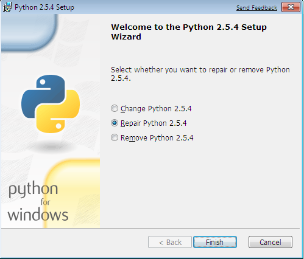
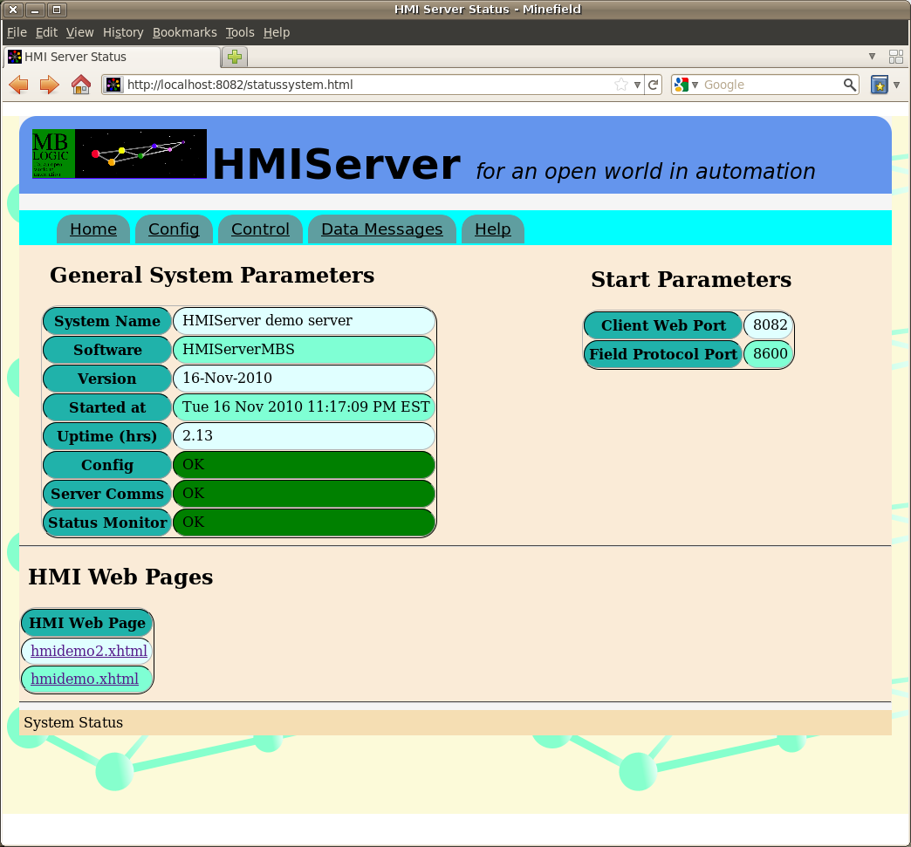
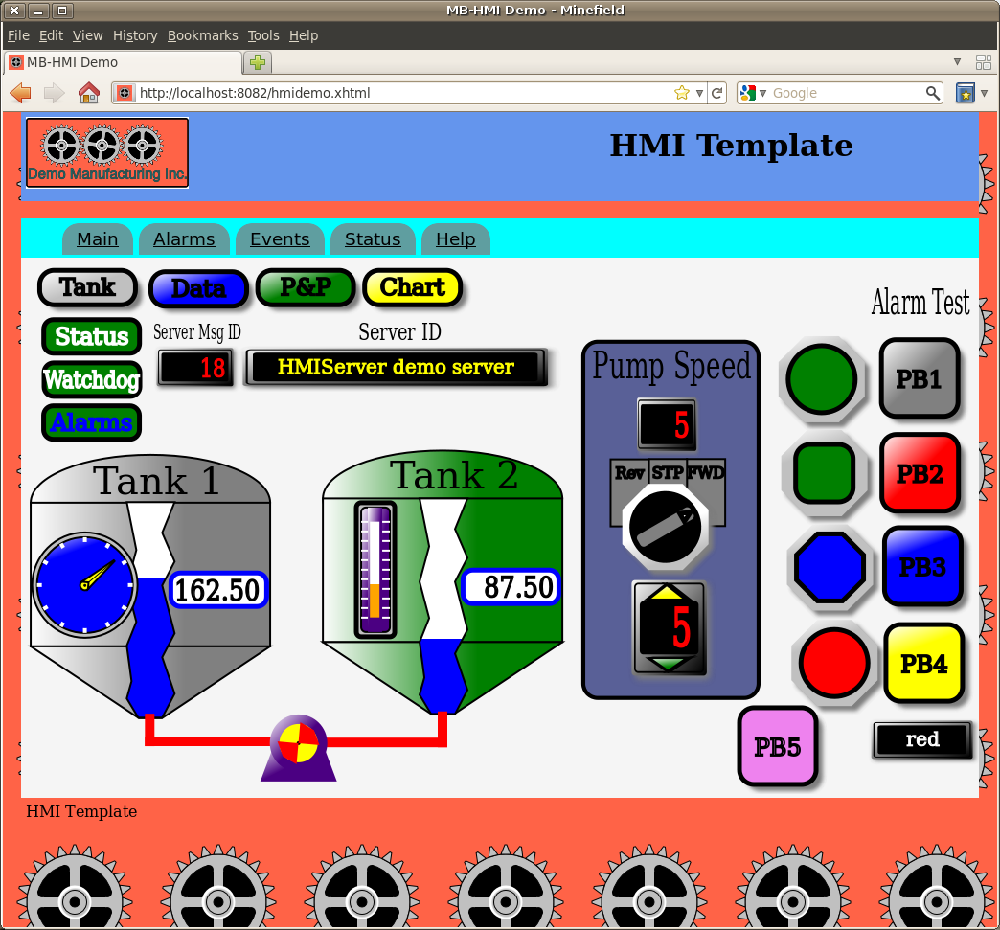
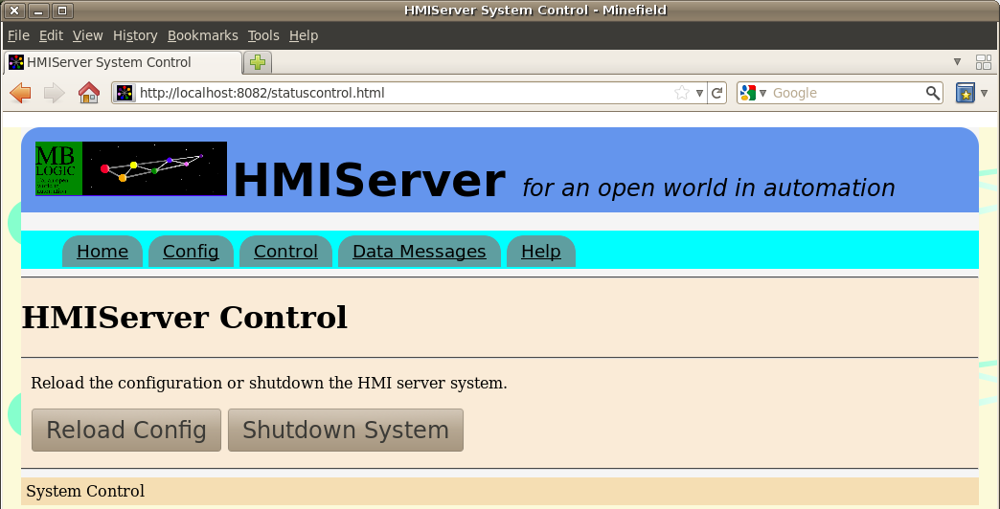

HMIServer
Help
HMIServer
Help
Help - HMI Server Installation
Overview:
Installation consists of the following steps:
- Extract the application files from the archive.
- Obtain and install the required third party software packages.
- Test the installation.
Versions:
HMIServer was previously distributed as a separate package for each protocol. It is now distributed as a single combined package which includes all protocol versions together. However, each version still supports just one protocol at a time.
The available versions are:
- HMIServerMBC - Modbus/TCP client.
- HMIServerMBS - Modbus/TCP server.
- HMIServerSBC - SAIA Ether SBus client.
- HMIServerSBS - SAIA Ether SBus server.
A server is also sometimes known as a "slave". Use the server version if you intend to talk to it using a client (master). A client is sometimes known as a "master". Use the client version if you intend to have it talk to a server (slave).
Installing the Base Application:
The application is distributed as a source archive file. For most platforms (including Linux), this is a "tar.gz" file. For MS-Windows, this is a "zip" file. The MS-Windows version has the special new-line character combination (CR-LF) required by that platform, but is otherwise identical to the standard version.
Installation:
- Select or create a directory into which to extract the application files.
- Extract the archive file into the desired location.
- Several sub-directories will be created as part of the extraction process.
- The application itself will now be installed. However, you cannot run it until you install the third party support software (see the help instructions on how to perform that step).
Application Directory Contents:
You should see the following items present in the application directory.
Application Directory Contents:
There will be a directory named "hmiserver. It will contain a number of files with ".py" extensions. These are part of the application program itself. These files will be automatically compiled to ".pyc" files when the application first starts. There will also be several sub-directories with additional code files, as well as html web pages for the help system and the status monitorin system. There is nothing in these directories that you will need to change.
HMI Directory Contents:
There will be a directory called "hmipages". It will contain a number of files with ".xhtml", ".js", ".css", and ".png" extensions. These files constitute a sample HMI client (web page) that comes with the system. You will replace some of these files with your own versions later if you create your own HMI application.
Sample HMI Application:
There will be a file which is provided as a sample HMI application. This sample application works with the sample HMI client (web page). This file is:
- "mbhmi.config". This is provided as a sample HMI server configuration file. You will need this file to use the HMI demo.
Shell Script to Start the System:
There will also be a shell script which is used to start the system with one of the following names:
| Protocol | Client/Server | Linux File | MS Windows File |
|---|---|---|---|
| Modbus/TCP | Client | hmiservermbc.sh | hmiservermbc.bat |
| Modbus/TCP | Server | hmiservermbs.sh | hmiservermbs.bat |
| SBus | Client | hmiserversbc.sh | hmiserversbc.bat |
| SBus | Server | hmiserversbs.sh | hmiserversbs.bat |
This file simply calls the main program file. You can use this as a guide for creating your own start up script.
Shell Script to Start the Demo Programs:
There will also be a shell script which is used to start the system together with an additional programs used to support the demo application.
| Protocol | Client/Server | Linux File | MS Windows File |
|---|---|---|---|
| Modbus/TCP | Server | "hmidemombs.sh | "hmidemombs.bat |
These start HMIServer as well as a simple demo process simulator program. This demo uses the Modbus/TCP server version to demonstrate the HMI features.
Installing Third Party Support Software
The system requires a third party package which must be installed separately before the system will function. This third party package is the Python run time language support for the Python programming language. This package is free, and can be downloaded from the location listed below.
The system has been tested with Python versions 2.5 and 2.6. Other versions may work but have not been tested.
For Linux:
For Linux, Python is already installed in most distros. If it is not already installed, it can normally be obtained from your distro's package repository. Use your package manager (e.g. Synaptic) to download and install the package.
For MS Windows:
Installing software on MS Windows is traditionally more difficult that with Linux, as MS Windows has no package management or repository system. This means that each package must be downloaded and installed manually. However, this is relatively straight forward if you follow the steps below.
Python can be obtained from the following location (don't install them just yet though):
- Python - http://Python.org
Once you have obtained the software, install it as shown below:
Python. Make a note of where you installed this, as you will need this information later. (Note, the actual install screen will look slightly different from the one shown below. This screen shot was taken after the install was run once already). Run the installer and follow the instructions in the install menus.

Some copies of MS-Windows may have one or more "dll" files missing which prevent the program from operating correctly. This can happen when dll files are unintentionally removed when uninstalling software or making other changes. One dll in particular to check is "mfc71.dll". This is a standard MS Windows library which is used by many programs. This should be in the "c:\windows\system32" directory. If it is missing, you will need to reinstall it. A search on Google will turn up many solutions for this problem (this is a common problem). However, do not install this file if there does not appear to be any problem. This file is not necessary for Linux.
Testing Third Party Software:
To test if the third party software installation is working, you can do the following (you can skip this step if you wish).
For Linux:
For Linux, open a command line terminal and type "python". You should see the Python interpreter start up with something like the following:
Python 2.6.2 (release26-maint, Apr 19 2009, 01:58:18) [GCC 4.3.3] on linux2 Type "help", "copyright", "credits" or "license" for more information. >>>
Note: - The version number may be different than the example shown above.
To exit Python, press "control-D" (press the control and "d" keys simultaneously). To close the terminal, press "control-D" again.
For MS Windows:
For MS-Windows, following the instructions given above for Linux, with the following exceptions.
When starting Python, you will need to include the full path name to the Python interpreter. For example: "C:\Python26\python"
Note: - The Python version number is part of the path name. If you have installed a different version, you will need to alter the path accordingly (e.g. "C:\Python25\python")
To exit Python, type the following ("control-D" is not compatible with MS-Windows):
import sys sys.exit()
Using the Demo to Test the Application:
When all software has been installed, you can start the application demo to see the available features.
This step is only required if you are using the demo provided with the release. This step starts additional programs that provides a simulation for the sample HMI web page. These applications are not required if you are connecting the HMI server to a normal Modbus/TCP field device (e.g. a PLC).
Starting the Demo from Linux:
Do one of the following"
- If you are using Gnome, double click on the shell script file (see above for the file names).
- Or from the command line, type the file name. For example: "./hmidemombs.sh" file for the Modbus/TCP server version.
Starting the Demo from MS Windows:
Do one of the following"
- If you are using the MS-Windows GUI, double click on the batch file (see above for the file names).
- Or from the command line, type the name of the batch file and press enter.
Start-up Messages:
You should see something like the following appear:
HMIServerMBS version: 24-Nov-2010 Started on Tue Nov 30 10:16:30 2010 with HMI port 8082
If you have started the server on a different HMI port number the message will reflect that change.
Checking the Web Interface:
Check the system status web page by starting your web browser and entering the following URL (this assumes you are using the sample configuration):
http://localhost:8082/statussystem.html
You should see a web page titled "HMI Server Status" similar to the one shown below.

Alternatively, the following URL will display the old style static web page:
http://localhost:8082/hmiserverstatus-en.html

Running the HMI Demo:
Check the HMI system by starting your web browser and entering the following URL (this assumes you are using the sample configuration):
http://localhost:8082/hmidemo.xhtml
or
Click on the link at the bottom of the "HMI Server Status" page.
You should see a web page titled "MB-HMI Demo". You should see a number of graphical elements including push buttons, pilot lights, tanks, and gauges.

Just above the middle of the screen on the left you should see a numeric display box titled "Server Mesg ID:" the number appearing within the box should be incrementing at a rate of approximately once per second. To the left of this should be a box titled "Comm Status". The background of this box should be green. If you see these items, the system is running correctly.
The HMI demo uses vector graphics based on SVG. Most modern web browsers have this capability, including Firefox, Opera, Apple Safari, Google Chrome, etc. Some browsers based on older technology (e.g. any version of MS Internet Explorer, old versions of Netscape Navigator, etc.) do not have this ability. They may load but not display the page.
The demo page was developed and tested using Firefox, so that browser is recommended for this test. Be sure that you have Javascript enabled, as it is needed to run the communications between the web page and the server.
Starting the Application in Normal Use:
Starting the HMI Server:
If you are not testing the system using the demo support packages, you can run the actual HMIServer application without them and use actual field devices as data sources. A shell script (or batch file for MS Windows) is provided as an example of how to provide the start parameters. You will normally change the contents or this shell script (and its name as well, if desired) to provide the correct parameters for your actual application.
Starting from Linux:
Do one of the following"
- If you are using Gnome, double click on the shell script file (see above for the file names).
- Or from the command line, type the file name. For example: "./hmiservermbs.sh" file for the Modbus/TCP server version.
Starting from MS Windows:
Do one of the following"
- If you are using the MS-Windows GUI, double click on the batch file name.
- Or from the command line, type the name of the batch file and press enter.
Stopping the Application
To shut down the application, do one of the following:
Via the Web Interface
Select the "Control" page, and then press the "Shutdown System" button. The page will then request that you confirm the shutdown request.

Direct from Keyboard
Press "control-C" (press the "control" and "C" keys simultaneously) in the terminal window where the application is running. This will send a signal to the system asking it to shut down. You should see something like the following appear.
Operator terminated system at Sat Jan 10 20:45:42 2009
The demo simulation packages (if you are using them) can be stopped in a similar manner.
System Configuration:
Documentation on system configuration can be found in the on-line documentation provided with the installation. To access the on-line documentation, click on the "help" button located near the top of the HMI server status web page (see above).